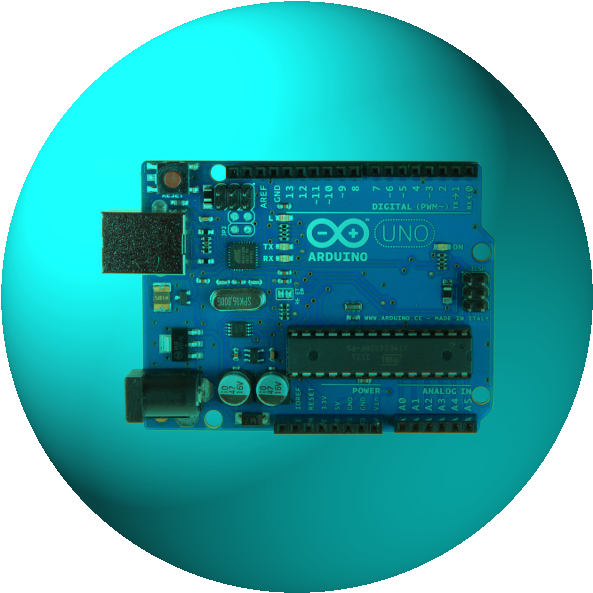

Simple Computing Devices
What does it do?
Today, small computing devices are cheap and available and are used in a variety of consumer products*.
Two types currently on the market today are Single Board Computers and Microcontrollers.
It is difficult to trace the origin of the first microcontroller (Jim Salter n.d.; Parab et al. 2007), however numerous sources credit Texas Instruments -
TMS1000* as the first (Parab et al. 2007), quickly followed by Intel MCS-48 microcontroller series including the 8048. A microcontroller is effectively a
single chip, many small appliances have a micro control embedded within them today to control a single function. The following are examples of microcontrollers today:
Arduino (‘Arduino’ n.d.), MIT's Handyboard (‘THE HANDY BOARD AND THE SUPER CRICKET’ n.d.) and Phidgets (‘Phidgets Inc. - Products for USB Sensing and Control’ n.d.).
The key market for these controllers is robotics.
The first Single Board Computer (SBC) was the Dyna-Micro (1976) featured in the May 1976 Radio Electronics (John Titus 1976)magazine where it details,
“this system has been designed to teach you about microcomputers”. It interesting that 45 years on the new breed of SBC, Raspberry Pi is still being marketed as a
learning tool (‘Teach, Learn, and Make with Raspberry Pi – Raspberry Pi’ n.d.).
Effectively they are the equivalent the motherboard of a PC today, as today’s computers have other boards to run such peripheral components as
drives, serial ports, graphics cards with the motherboard offering support. The SBC has one board and allows all peripheral components to plug into to it.
Fast forward to today and these two small computer devices are the key ingredient in popular consumer products and are commonly marketed as educational or inventor
kits (‘Teach, Learn, and Make with Raspberry Pi – Raspberry Pi’ n.d.). The previously mentioned Raspberry Pi is an SBC while the Arduino range and Makey Makey use
a microcontroller.
Generally these devices utilise open source software making it easy for the users to understand the code and modify to perform operations they desire (Jim Salter n.d.).
The Makey Makey (‘Makey Makey’ n.d.) is a Microcontroller that uses circuit board, USB cable and alligator clips. It allows the user to connect any item that conduct current to act as a keyboard button.
The Arduino (‘Arduino’ n.d.) is a basic device that will complete the same program repeatedly. It doesn’t use an operating system and has limited memory.
The Arduino UNO has only 35 kilobytes of flash memory and 2kilobytes of SRAM. It has Digital 14 I/O pins producing output. Processing speed is at 16Mhz.
The Raspberry Pi (‘Teach, Learn, and Make with Raspberry Pi – Raspberry Pi’ n.d.), on the other hand, is a credit card size SBC. It runs a Linux operating system, can
handle multiple programs and allows for peripherals such as a monitor, mouse and keyboards. It can function as a computer, complete multiple tasks or be set up a s media centre.
Looking at the Raspberry Pi in more detail, it was first released in February 2012, developed in the UK by the Raspberry Pi Foundation. The foundations intended purpose
was to use it as a teaching aid, however it became far more popular than anticipated, with hobbyist and inventors taking to the gadget.
Specifications
- All models have a system on a chip (SoC), a central processing unit (CPU) and graphics processing unit (GPU).
- The main programming languages are Python and Scratch.
- Processor speed ranges from 700 MHz to 1.5 GHz.
- The new Pi4 has up to 8 Gigabytes RAM, with most between 256 megabytes to 1 GiB.
- SD cards in MicroSDHC form are used to store the operating system and program memory.
- The computer boards have one to five USB ports.
- HDMI and composite video are supported. An audio output jack.
- Models are available with Wifi and Bluetooth, while the B-models have only ethernet.
What is the likely impact?
Most of these devices are relatively inexpensive, ranging from $30 AUD to $110 AUD (‘Arduino Boards | Jaycar Electronics’ n.d.), which enables a greater
market of users. They are generally cross platform (Singh et al. 2018), and easy to use and learn about. They utilise open source software (Jim Salter n.d.).
Because these small computers often use open source software, consumers that use them have the ability to understand the underlying code, use it, modify it, and
generally play around (Jim Salter n.d.). This facilitates the learning process of the end user, which will fast track the learning process of the industry.
It is said that these are very easy to use and currently in the hands of primary school students (‘Arduino’ n.d.), what this means is that these kids have the
opportunity to learn at home as a hobby, rather than learning about computer systems in school.
Since these kits entered the market, they have constantly improved, and this is because of the openness of their design.
While they are copyrighted, the sharing and collaborative nature of the boards, and of open-source software in general, results in an
almost crowd sourcing community that push the development and advancements forward at a more rapid rate.
There is a little doubt that as a result we will see people that have grown up using with these devices making a huge impact on the technology front
in the future. In the authors opinion, ambitious developers will invent products and services that have a profound impact on the community and will become household names.
How will this affect you?

Having detailed that we are likely to see technology advancements as a result with users growing up with these devices, it is not hard to believe that the
children of today will make their mark on the future inventing consumer products, as Wozniak did in the early 1970’s. However, they will not have had to come
from such a low base of knowledge as he did. This will mean that consumers will likely benefit from these creations.
What these creations will be is anyone’s guess, however the author believes that there will be many that make the author’s life easier, things that were done manually
in the past that may be more automated in the future. With this though, in some instance of the user interface, set up is not done correctly, the constant upgrades or
incompatibility with future advancements they may cause headaches.
Finally, until doing this course, the author knew little about these devices. He knew that there where kits available to build robots using computer components,
however he wasn’t aware of the user-friendly nature of the design and ease with which one can adapt and create one's own outcome.
Couple this with the relatively inexpensive price, and this author gets the sense that he will be getting a Raspberry pi and having a play.
Should the author get one, then he will likely spend countless hours learning, developing and playing: Initially becoming obsessed before finally discarding it for the next gadget on the market.